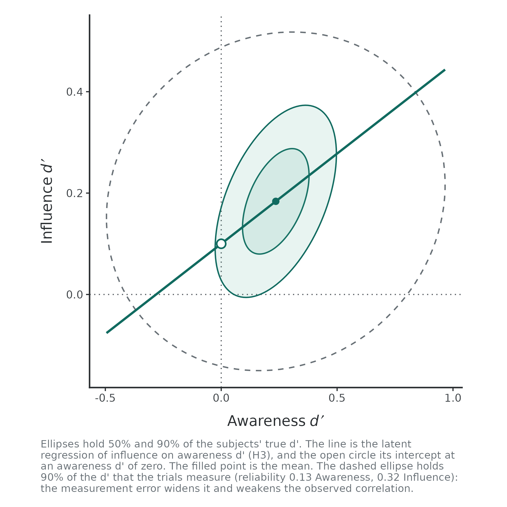
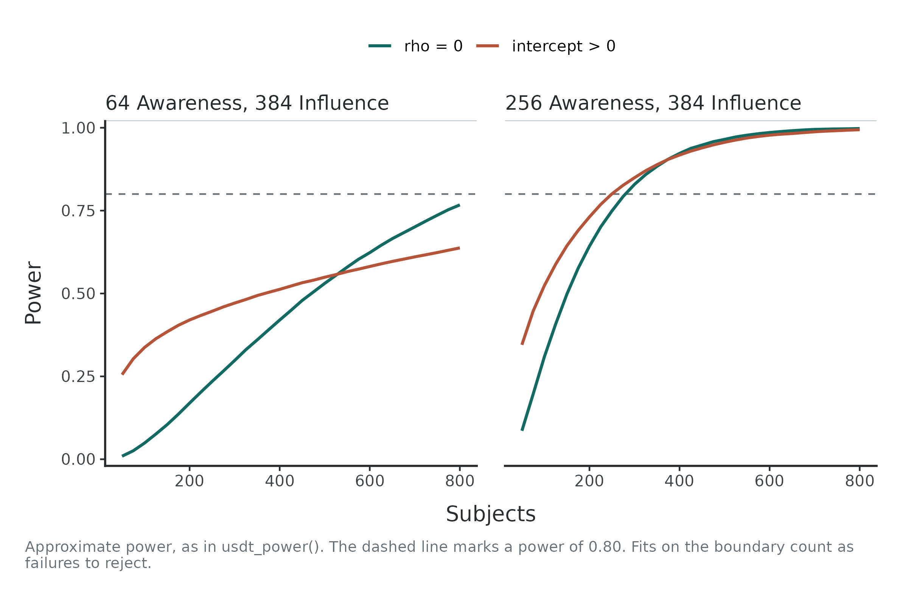
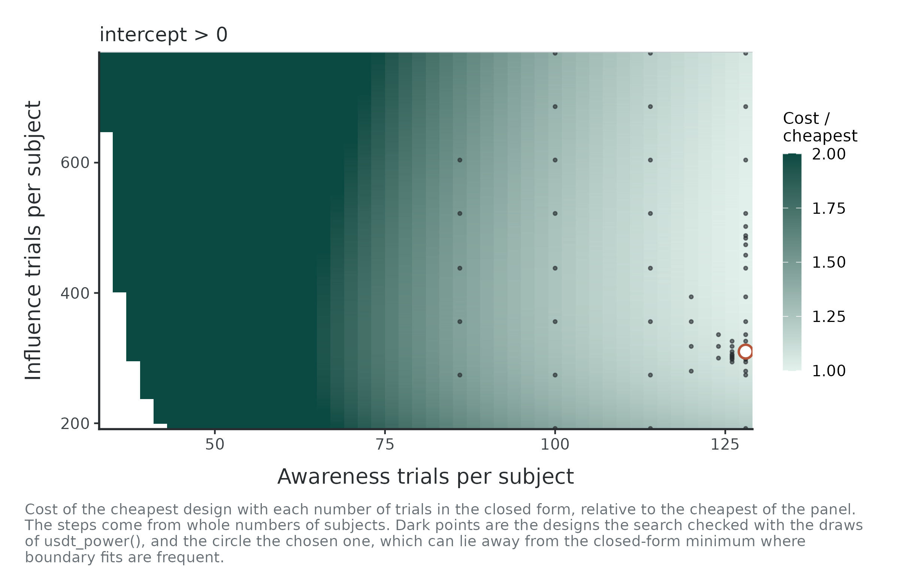
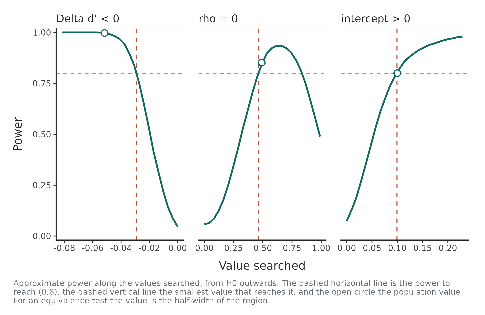
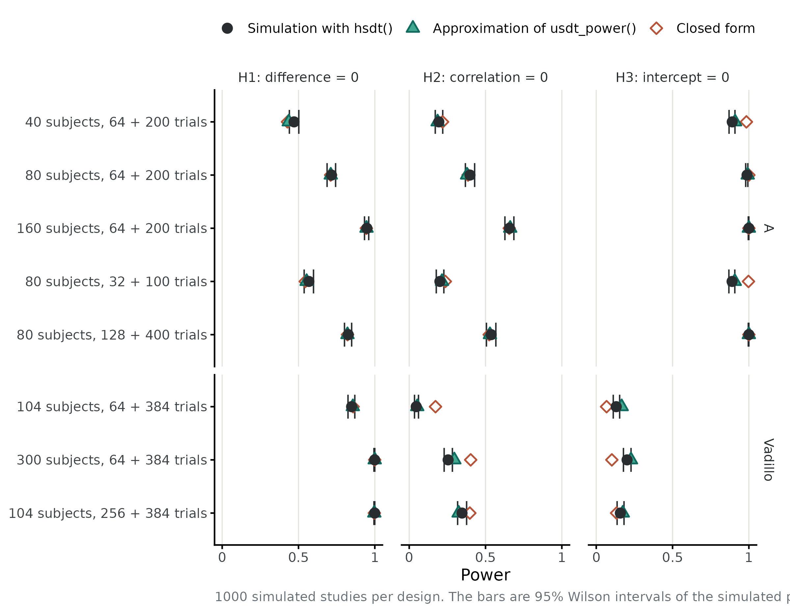

Three numbers to choose
A study of unconscious processing has three sizes to choose: how many subjects, how many trials of the awareness task and how many of the influence task. Trials affect measurement error in each subject’s sensitivity (d'). Subjects affect the precision of population estimates. The hypotheses depend on them in different ways:
- H1, the difference between mean sensitivities, gains from both subjects and trials, like any comparison of means.
- H2, the latent correlation between task sensitivities, needs enough trials to separate between-subject variation from measurement error.
- H3, the latent intercept, estimates influence sensitivity at zero awareness sensitivity. Its precision also depends on the slope.
The workflow is to specify a population, compute power, choose a feasible design, vary assumptions and check the chosen design by simulation.
The population
Planning starts from the values the population is assumed to have. A pilot study is a natural source. The data of Vadillo, Malejka and Shanks (2025), which the package includes, serve as one here:
d <- usdt_data_tasks(
awareness = vadillo_awareness,
influence = vadillo_cuing,
subject_col = "subj",
condition_col = "condition",
condition_levels = c(signal = "old", noise = "new"),
response_col = list(awareness = "judged.old", influence = "rt"),
response_levels = list(awareness = c(signal = 1, noise = 0),
influence = c(signal = "faster", noise = "slower")),
dichotomize = list(awareness = FALSE, influence = TRUE)
)
pilot <- hsdt(d)usdt_population()
takes the estimates of a fit with from, and any value given
in the call replaces the estimate. For illustration, we target an
intercept of 0.1. Choose the smallest effect of interest from
substantive arguments. Neither this example nor the pilot determines it.
Giving the intercept uses the latent regression parameterization, which
keeps the awareness mean, both standard deviations and the correlation,
and moves the influence mean so that the intercept is 0.1:
pop <- usdt_population(from = pilot, intercept = 0.1)
pop── Population ───────────────────────────────────────────── latent regression ──
Parameter Awareness Influence
mean d' 0.235 0.184*
sd(d') 0.122 0.088
cor(d') 0.491
intercept 0.100
mean c -0.036 0.000
sd(c) 0.247 0.000
Tested quantity Value
H1 Δd' (influence - awareness) -0.052
H2 correlation 0.491
H3 intercept 0.100
slope 0.356
* The influence mean follows from the intercept: mu_I = b0 + rho (sd_I / sd_A) mu_A.
A task split at the median has its criterion fixed at 0.The arguments have the names of usdt_priors() and
take numbers: dprime, sd_dprime,
cor_dprime, criterion,
sd_criterion and intercept. A population can
also be written from scratch, in either parameterization, as
usdt_population(dprime = c(awareness = 0.2, influence = 0.3), sd_dprime = 0.3, cor_dprime = 0.4).
The plot shows the distribution of the true d' across subjects, with the latent regression line and its intercept. Given the trials of each task, it adds, as a dashed ellipse, the distribution of the d' those trials measure:

The subjects of this population differ very little in their awareness sensitivity (a standard deviation of 0.12), much less than 64 trials can tell apart. The measured awareness d' spreads almost three times as widely as the true one: the reliability of the awareness task is 0.13. Most of what a study would see in the awareness task is measurement error, and that is what limits H2 and H3.
The power of a design
usdt_power()
gives the power of each hypothesis for a number of subjects and of
trials per task. The hypotheses are written as in usdt_equivalence(),
so they can be two-sided, one-sided, equivalence or minimal-effect
tests. Here we use the pilot’s design, testing the correlation two-sided
and the difference and intercept one-sided:
usdt_power(pop, subjects = 104, trials = c(awareness = 64, influence = 384),
hypothesis = c("diff < 0", "rho = 0", "intercept > 0"),
dichotomize = "influence", combine = "all")── Power ──────────────────────────────────────────────────────── approximate ──
Design 104 subjects; trials per subject: 64 Awareness, 384 Influence (split at the median)
Reliability Awareness 0.128, Influence 0.322
Hypothesis Test True SE Estimable Power
H1 Δd' < 0 One-sided test -0.052 0.035 1.000 0.421
H2 rho = 0 Two-sided test 0.491 0.517 0.657 0.053
H3 intercept > 0 One-sided test 0.100 0.115 0.657 0.343
All at once Joint test 0.657 0.005
Approximate power: the share of 20,000 draws of the subjects' sample
mean and covariance in which the test rejects H0, at alpha = 0.05.The all row is the probability of rejecting all three
nulls in the same study. It is not the product of their separate powers.
If a population value lies in H0, the reported rejection rate is the
type I error rate.
The pilot’s design would detect an intercept of 0.1 in one study out
of three. The Estimable column estimates how often the
sensitivity covariance stays off the boundary in the approximation.
Non-estimable draws count as failures to reject H2 and H3.
Several numbers of subjects and of trials give a grid of designs, and
plot() draws power against the subjects:
curves <- usdt_power(pop, subjects = seq(50, 800, 25),
trials = list(awareness = c(64, 256), influence = 384),
hypothesis = c("rho = 0", "intercept > 0"),
dichotomize = "influence")
plot(curves)
Four times as many awareness trials do more for H2 and H3 than many more subjects: they raise the reliability of the awareness task from 0.13 to 0.37.
How the power is computed
Power uses a sampling-distribution approximation by default.
Measurement error in each subject’s d' has the variance that usdt_reliability()
reports, which falls with the number of trials. The measured d' of N
subjects then have a known covariance, and their sample mean and
covariance a known distribution. usdt_power() draws sample
means and covariances 20,000 times, subtracts measurement variance,
applies approximate tests and counts rejections. Invalid sensitivity
covariance estimates count as boundary outcomes for H2 and H3. This
approximates the hierarchical analysis. It does not fit a model to each
draw.
With method = "simulation", usdt_power()
instead simulates whole studies, splits the influence responses at each
subject’s median as meyen_split()
does, fits each one with hsdt() and tests it. This slower
method checks the chosen design below.
Choosing subjects and trials
usdt_plan()
chooses the design. A range lets it choose a value and a single number
fixes it. With subjects and trials free, many designs reach the same
power, trading subjects for trials, and what each costs decides among
them. Here the cost is the time of the study in seconds: 600 per subject
for instructions and breaks, 5 per trial of the recognition test and 2
per trial of visual search.
plan <- usdt_plan(pop, hypothesis = "intercept > 0", power = 0.8,
subjects = c(50, 1000),
trials = list(awareness = c(32, 512), influence = c(192, 768)),
cost = c(subject = 600, awareness = 5, influence = 2),
dichotomize = "influence")
plan── Plan ───────────────────────────────────────────── approximate · power 0.8 ──
Subjects 50 to 1000
Trials Awareness 32 to 512; Influence 192 to 768
Cost 600 per subject + 5 per Awareness trial + 2 per Influence trial
Target Subjects Awareness Influence Power Estimable Cost
intercept > 0 102 510 762 0.802 0.996 476,748
! intercept > 0: the design is at the limit of `trials$awareness` and `trials$influence`; a wider range may give a cheaper one.
Approximate power. Check the design with usdt_power(plan, method = "simulation").The cheapest design is a small study with long tasks, and both trial counts end at the limit of their ranges: with an awareness task this unreliable, more trials are cheaper than more subjects. A recognition test of 500 trials, however, may not be feasible, since testing the displays so many times could change what is remembered. With at most 128 awareness trials:
plan <- usdt_plan(pop, hypothesis = "intercept > 0", power = 0.8,
subjects = c(50, 2000),
trials = list(awareness = c(32, 128), influence = c(192, 768)),
cost = c(subject = 600, awareness = 5, influence = 2),
dichotomize = "influence")
plan── Plan ───────────────────────────────────────────── approximate · power 0.8 ──
Subjects 50 to 2000
Trials Awareness 32 to 128; Influence 192 to 768
Cost 600 per subject + 5 per Awareness trial + 2 per Influence trial
Target Subjects Awareness Influence Power Estimable Cost
intercept > 0 609 128 310 0.800 0.994 1,132,740
! intercept > 0: the design is at the limit of `trials$awareness`; a wider range may give a cheaper one.
Approximate power. Check the design with usdt_power(plan, method = "simulation").
plot(plan)
The plot shows the cost of the cheapest design for each number of
awareness trials. The grey line is the closed form that the search
starts from. The green points are the designs the search checked with
the draws of usdt_power(). The circle is the chosen one.
With an unreliable awareness task the closed form is optimistic, so the
search does not trust it and checks a lattice of designs and the
neighbours of the best.
Budget and precision targets
With fixed trials, these calls choose the number of subjects.
budget maximizes power within a cost limit.
precision targets an expected confidence interval width
instead of power.
usdt_plan(pop, hypothesis = "intercept > 0", budget = 30 * 3600,
subjects = c(50, 2000), trials = c(awareness = 128, influence = 384),
cost = c(subject = 600, awareness = 5, influence = 2),
dichotomize = "influence")── Plan ───────────────────────────────────────── approximate · budget 108000 ──
Subjects 50 to 2000
Trials Awareness 128 (fixed); Influence 384 (fixed)
Cost 600 per subject + 5 per Awareness trial + 2 per Influence trial
Target Subjects Awareness Influence Power Estimable Cost
intercept > 0 53 128 384 0.296 0.651 106,424
! intercept > 0: the design is at the limit of `subjects`; a wider range may give a cheaper one.
Approximate power. Check the design with usdt_power(plan, method = "simulation").
usdt_plan(pop, precision = c(intercept = 0.2), subjects = c(50, 2000),
trials = c(awareness = 128, influence = 384),
dichotomize = "influence")── Plan ───────────────────────────────────────────── approximate · precision ──
Subjects 50 to 2000
Trials Awareness 128 (fixed); Influence 384 (fixed)
Target Subjects Awareness Influence Width Estimable Cost
intercept width <= 0.2 224 128 384 0.200 0.935 224
Expected width of the 95% interval of usdt_tests() at the population values.Other assumptions
The plan rests on the population. Several values in an argument of
usdt_population() give one scenario each, and update()
changes them. With the awareness task at 128 trials and the influence
task at 384, a larger intercept or a weaker correlation than assumed
needs another number of subjects:
scenarios <- update(pop, intercept = c(0.1, 0.15), cor_dprime = c(0.3, 0.49))
usdt_plan(scenarios, hypothesis = "intercept > 0", power = 0.8,
subjects = c(50, 3000), trials = c(awareness = 128, influence = 384),
dichotomize = "influence")── Plan ─────────────────────────────── approximate · power 0.8 · 4 scenarios ──
Subjects 50 to 3000
Trials Awareness 128 (fixed); Influence 384 (fixed)
Scenario Target Subjects Awareness Influence Power Estimable Cost
1 intercept > 0 447 128 384 0.800 0.998 447
2 intercept > 0 567 128 384 0.800 0.995 567
3 intercept > 0 251 128 384 0.801 0.983 251
4 intercept > 0 316 128 384 0.801 0.969 316
Approximate power. Check the design with usdt_power(plan, method = "simulation").An intercept of 0.15 needs about half the subjects that 0.1 needs. A weaker correlation needs fewer subjects, not more: with a flatter slope, the intercept depends less on how far the regression is extrapolated to an awareness sensitivity of zero.
The smallest effect the design detects
usdt_mdes()
finds, for each hypothesis, the smallest effect a design detects with
the given power. It moves the tested quantity away from H0 with the rest
of the population fixed, as its parameterization says. With the chosen
design:
mdes <- usdt_mdes(pop, subjects = plan$design$subjects,
trials = c(awareness = plan$design$trials_awareness,
influence = plan$design$trials_influence),
hypothesis = c("diff < 0", "rho = 0", "intercept > 0"),
dichotomize = "influence")
mdes── Smallest detectable effect ─────────────────────── approximate · power 0.8 ──
Design 609 subjects; trials per subject: 128 Awareness, 310 Influence
Hypothesis Varies Population Power there Smallest
H1 Δd' < 0 diff -0.052 0.997 -0.029
H2 rho = 0 rho 0.491 0.852 0.464
H3 intercept > 0 intercept 0.100 0.800 0.099
Approximate power, as in usdt_power(). NA: the power is not reached
in the range searched.
plot(mdes)
The power of H2 does not keep rising with the correlation: near 1,
the estimated correlation often reaches the boundary, where the test
cannot be run. For an equivalence test, usdt_mdes() gives
instead the narrowest equivalence region the design can establish.
Checking the design by simulation
A design chosen with the approximation should be checked by
simulating it. usdt_power() takes the plan and simulates
its designs, analysing each study with hsdt(). The
following is optional and is not run when building the article:
check <- usdt_power(plan, method = "simulation", nsim = 1000, ncores = 4,
seed = 2026)
check
summary(check)The report gives the simulated power with its Monte Carlo error and
95% interval, and how many studies failed to converge.
summary() reports the precision of each quantity across the
simulated studies: the mean estimate and its bias, the empirical
standard error (the standard deviation of the estimates) against the
mean standard error the fits report, and the width and coverage of the
intervals. Each study has its own random number stream, so the results
do not depend on the number of cores.
How close is the approximation?
The figure compares, for eight designs of two populations, the power
of the three point nulls from the closed form, from the approximation of
usdt_power() and from 1000 simulated studies analysed with
hsdt(). Population A is a plausible case of unconscious
processing, with reliabilities from 0.4 to 0.85. The Vadillo population
has an awareness reliability of 0.13 with 64 trials.

For these designs, H1 agrees across methods. For H2 and H3, the closed form diverges when awareness reliability is low because it ignores boundary outcomes. The sampling-distribution approximation follows the simulation more closely, but remains somewhat optimistic for the Vadillo population. Check chosen designs by simulation, particularly with low reliability.
The approximation assumes equal signal/noise variances. To check
sensitivity to unequal variances, set sd_signal in
usdt_population() and use
method = "simulation". Those studies are still analysed
with the equal-variance frequentist model.
Summary
| Question | Function |
|---|---|
| What population do I assume? |
usdt_population(), from values or from a pilot fit |
| What power does my design have? | usdt_power() |
| How many subjects, trials, or both? |
usdt_plan(), with cost,
budget or precision
|
| What if my assumptions are wrong? | several values in usdt_population() or
update()
|
| What is the smallest effect I can detect? | usdt_mdes() |
| Does the chosen design hold up? |
usdt_power(plan, method = "simulation") and
summary()
|
References
Vadillo, M. A., Malejka, S., & Shanks, D. R. (2025). Mapping the reliability multiverse of contextual cuing. Journal of Experimental Psychology: Learning, Memory, and Cognition, 51(6), 910-927. https://doi.org/10.1037/xlm0001410